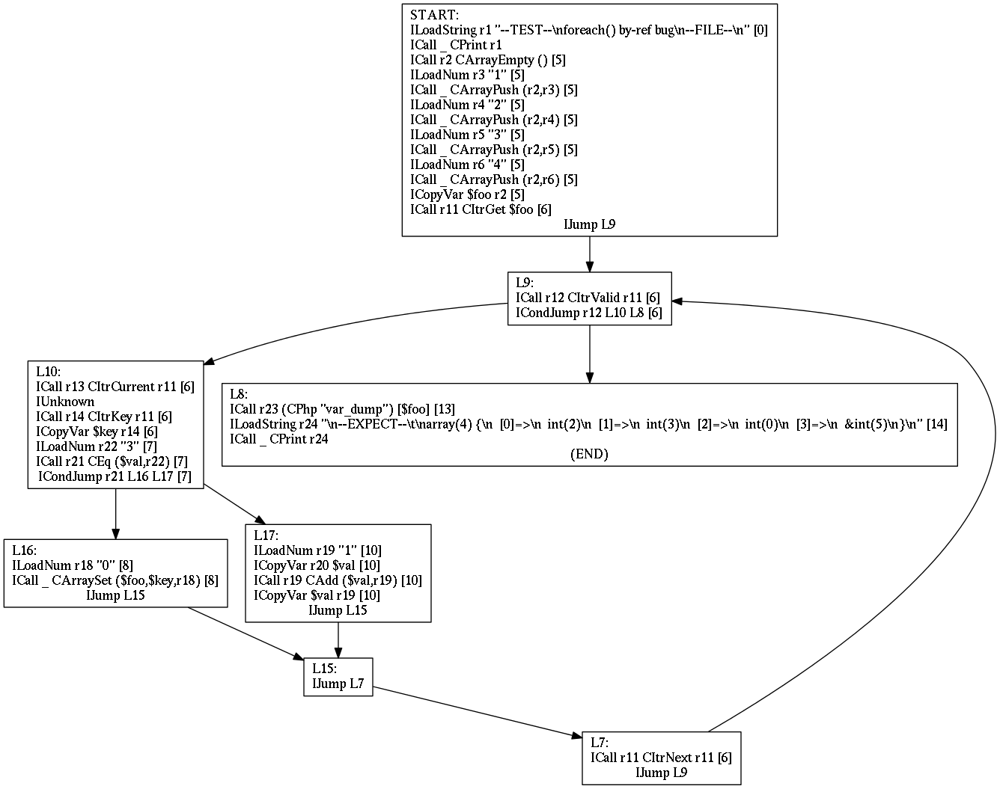

menu: What is it? | Documentation | Donate | Team | Contact us
17eyes is a static code analysis tool for the PHP programming language, aiming at improving both quality and security of your code. Over the years, PHP evolved to be a complex language with many pitfalls. We believe that many potential problems can be detected automatically by a source code quality checking tool. Our aim is to create such tool and make PHP development more pleasant and efficient.
We wrote that code in the PHP 5.4 and 5.5 era to rule the planet... We took over the planet in a different way, so we decided to release our work under permissive free software license (ISC license which is BSD compatible). Feel free to fork it, send us patches, love it, ignore it or do with it whatever you want. "Your only limit is yourself".
Currently we've implemented PHP language parser, unparser, AST analysis, some skeleton of CFG analysis framework. There is still a lot of work to do in order to make this tool usable. However there are potential projects that may reuse existing code (including PHP code instrumentation tools etc.). Let us know if you do something interesting on top of the 17eyes.
If you have any questions, feel free to contact us. If you're a billionaire, consider hiring us to finish this project.
Tags: #haskell #staticanalysis #php #parser #unparser #codeanalysis #hipsterstuff
So far we've implemented PHP language parser and unparser based on lex-pass which was maintained at facebook. AST analysis is built on top of abstract syntax tree which is produced by our parser. CFG analysis relies heavily on Hoopl library, you can read a paper about this library at: http://research.microsoft.com/en-us/um/people/simonpj/papers/c--/hoopl-haskell10.pdf. Below you'll find only some kind of survival kit, we'll try our best to extend that section though.
You can grab our source code from github repository. To get sources simply clone it:
$ git clone https://github.com/17eyes/17eyes.gitIn order to build the code, you'll need GHC and cabal utility. All you have to do is to run cabal install.
$ cabal install -j5
Resolving dependencies...
Configuring 17eyes-0.1...
Building 17eyes-0.1...
Installed 17eyes-0.1And voilà. Now you should have 17eyes installed under you cabal's bin path. We've successfully built this code on Linux and FreeBSD boxes using GHC 7.8. Code relies on older version of Hoopl package (3.8.x). Someday we'll release binary versions.
At present 17eyes uses only a limited set of analyses, you can perform a PHP file scan simply by running 17eyes [file] command.
tests/undefined $ 17eyes good_method.php
good_method.php:6 line too long
------------------------------------------------------------------------------
Almost all lines in this file are shorter than 78 characters, but this one is
longer. It is often desirable to maintain a consistent line length convention.
good_method.php:10 class and function declarations should have their opening brace on a new line
------------------------------------------------------------------------------
By convention the opening brace after class and function declarations is usually
in the next line. This serves as a visual aid to distinguish these declarations
from statements like "if" or "switch".To get help run 17eyes --we-dont-have-help-yet:
$ 17eyes --we-dont-have-help-yet
17eyes: user error (unrecognized option `--we-dont-have-help-yet'
Usage: 17eyes [OPTION...] FILES...
--dot parse from the standard input and output CFG representation consumable by Graphviz's `dot'.
--dump-ast just parse from standard input and dump the AST
--unparse parse from the standard input and reconstruct the source code
--resolve=NAME try to find a function, class, method or constant by name
-d DIR --codebase=DIR set the codebase directory (instead of the default www)
)To get AST use --dump-ast switch:
src/cakephp/lib/Cake $ cat bootstrap.php | 17eyes --dump-ast
Ast "" (TopLevel "" (Just (Right "php"))) (Intercal [WS "\n",Comment [...] You can also dump CFG graph in dot format in order to produce fancy images:
tests/parser $ cat foreach.phpt | 17eyes --dot | dot -Tpng > graph.png
WARNING: references are not implementedYou'll get following picture:
Our test code is a simple GNU Makefile which has defined few targets:
tests $ make help
test
test_parser_only
test_hunit_only
test_unparser_only
clean
failed
summary
tests $ make test_parser_only
ID: TESTID=20150529103756
Test cases: 11003
OK: 10857
Failed: 146Please make sure to use gmake on BSD systems. We've been using these tests mostly internally for CI purposes, you can find further details under the tests/ directory.
Please use github issues to report an issue. We'd appreciate patches, pull requests and any suggestions. If you want speak us privately, take a look at contact section.
pfff
PHPLint
PHP-sat
Pixy
Rips Scanner
Static Analysis tools for PHP - general article about PHP static analysis tools.
Static Analysis for PHP - Slides from PHPDay Italy 2012
I want to believe in static analysis - slides from OWASP Kraków meeting held in 2012. [PL]
If you would like to see some particular feature implemented, you might consider donating to the project. Contact us for further information.
During initial phase we were sponsored by LogicalTrust and DigitalSun.
If you have any questions or any other reason to talk to us, please do not hesitate to contact us. There are several ways to reach us: by e-mail dev@17eyes.com, via IRC: #17eyes @ Freenode.